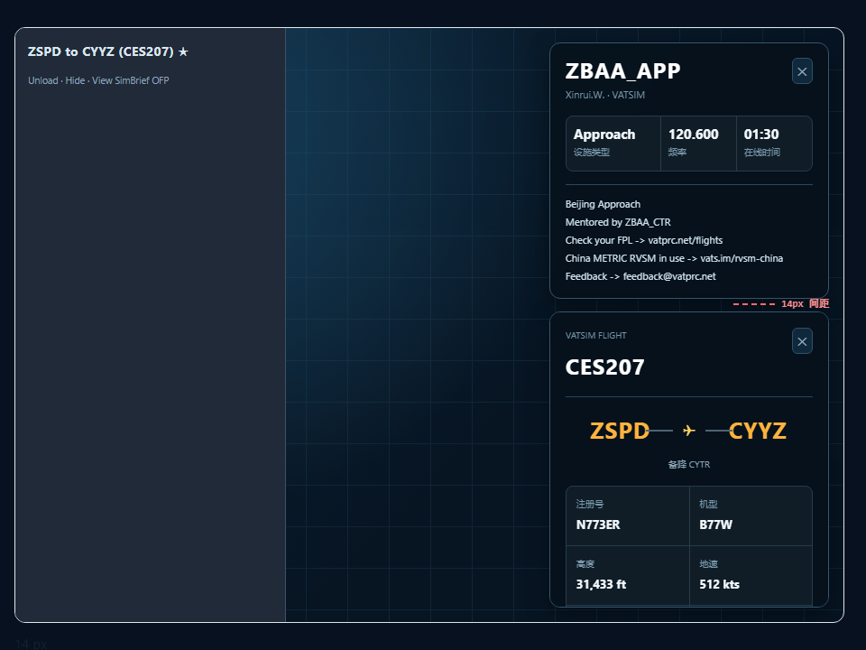

点击「有管制」的 FIR / APP 扇区 → 右侧打开席位卡；与 VATSIM FLIGHT 卡共处一栏，固定 14px 间距，FLIGHT 卡被压短而不是被盖住。
| 鼠标动作 | 结果 |
|---|---|
| 点击有管制的 APP / TRACON 扇区 | 右侧栏顶部出现该扇区席位的详情卡（呼号 / 管制员 · VATSIM / 设施类型 / 频率 / 在线时间 / 席位备注） |
| 点击有管制的 FIR / UIR 边界或区域 | 同上。APP 图层叠在 FIR 之上，故同一个点优先选中 APP 扇区，不会退化成「整片 FIR」 |
| 点击无管制的扇区或空白地图 | 收起管制详情卡（无管制扇区本就不可点，光标也不是手型） |
| 点击 VATSIM 航班点 | 只打开 FLIGHT 卡，不会顺手关掉已打开的管制卡 —— 两张卡可同时在看 |
| 席位下线（快照刷新） | 自动收起管制卡，不残留查不到数据的空壳 |
| 距离测量模式开启时 | 点击只用于打点测距，不触发扇区选中 |
一个扇区可能同时有多个席位在线（如 ZBPE_CTR + ZBPE_N_CTR），此时卡片顶部出现呼号切换按钮。
实测：当前快照中 FIR 有 6 个扇区、TRACON 有 1 个扇区属于这种多席位情况。
卡片高度自适应，长备注自动内部滚动，且最多占右侧栏高度的 46%（给 FLIGHT 卡留位置）。
Unload · Hide · View SimBrief OFP
管制卡固定在右上，FLIGHT 卡从它下方开始；两卡间距实测 测量中…

把改动后的 src/lib/airspace.ts 编译后，直接对线上数据跑了一遍 applyActiveFirControllers / applyActiveTraconControllers，再模拟点击把每个点亮扇区的呼号回查 VATSIM 快照：
| 校验项 | 结果 |
|---|---|
| 纯函数断言 | 12 / 12 通过（facility 名称、HH:MM 在线时长、呼号数组与拼接串两种解码、ATIS 空行过滤） |
| 边界与席位规模 | 1097 个 FIR 边界 / 1284 个 TRACON 扇区；快照 160 席位 / 1537 航班 |
| FIR 点亮与回查 | 点亮 29 个 → 可生成 35 张席位卡，呼号 100% 命中快照，6 个扇区为多席位 |
| TRACON 点亮与回查 | 点亮 18 个 → 可生成 19 张席位卡，呼号 100% 命中快照，1 个扇区为多席位 |
每个要素都带 activeCallsigns 数组 | 通过，且 active 与数组长度始终一致 |
线上样例（即上方预览卡的真实来源）：ZBAA_APP · Xinrui.W. · Approach · 120.600 · 已在线 01:30，备注 5 行。
| 文件 | 改动 |
|---|---|
src/lib/airspace.ts | VatsimController 补 cid / rating / logon_time / text_atis；新增 vatsimFacilityLabel、vatsimOnlineDuration、vatsimAtisLines、activeCallsignList；两个 applyActive* 额外写出 activeCallsigns 数组（保存该扇区名下全部席位） |
src/components/map/ControllerDetailPanel.tsx | 新增。席位详情卡：呼号 / 管制员 · VATSIM / 设施类型 · 频率 · 在线时间（每 30 秒重算）/ 席位备注，多席位时带呼号切换 |
src/pages/MapPage.tsx | 地图点击按 TRACON → FIR 优先级取活跃扇区并解码呼号；空点/无管制点击收起卡片；席位下线自动收起；可点扇区给手型光标；把管制卡与 FLIGHT 卡一起放进新的 .map-right-rail |
src/styles.css | 新增 .map-right-rail（flex 列 + 14px gap）与 .controller-detail-*；.traffic-detail-panel 由「绝对定位满高」改为「栏内 flex 子项」，高度随管制卡让位；图层面板避让位移由 326px 调整为 342px |